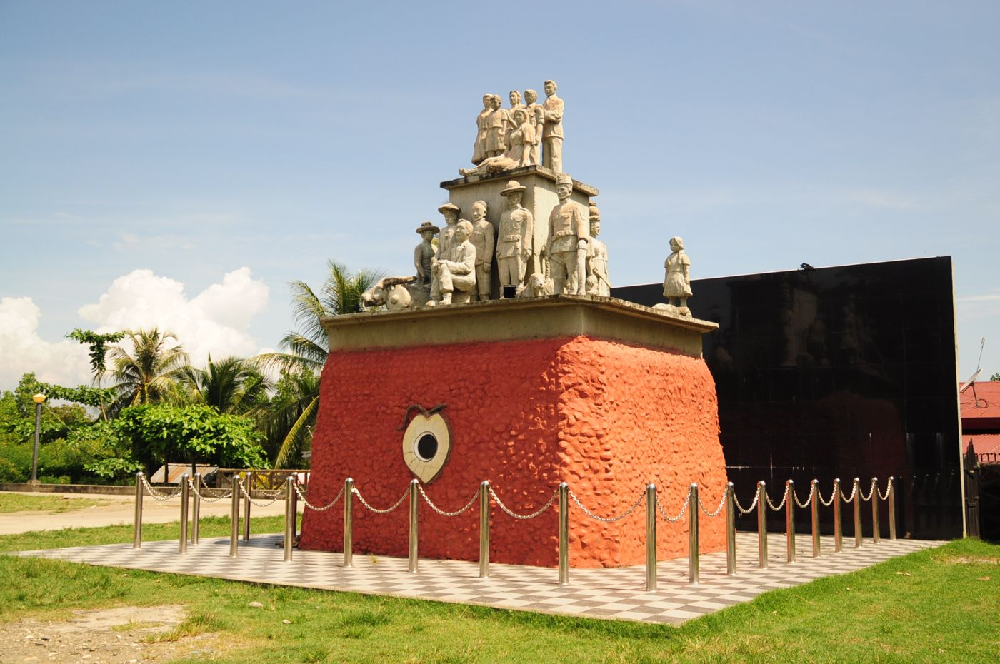
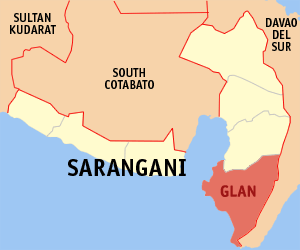
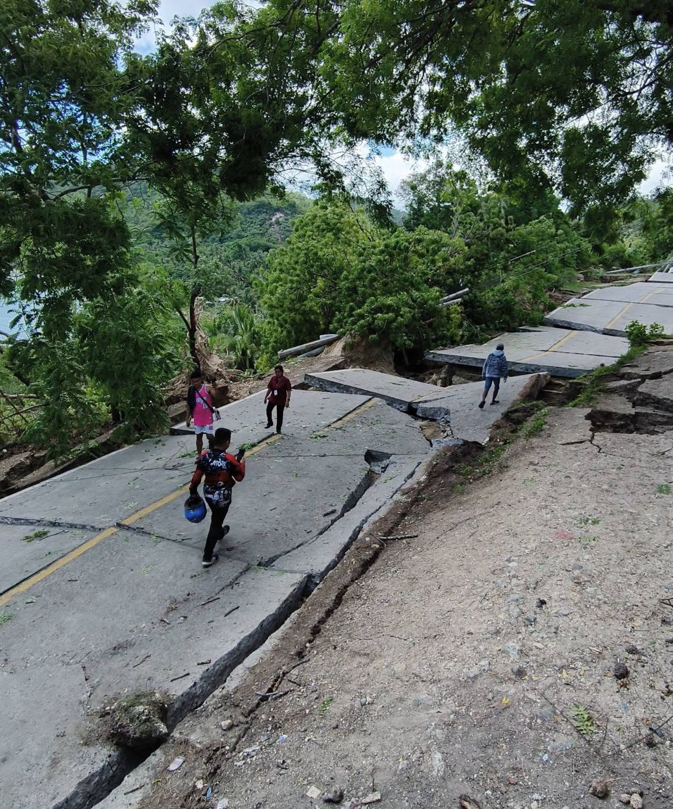
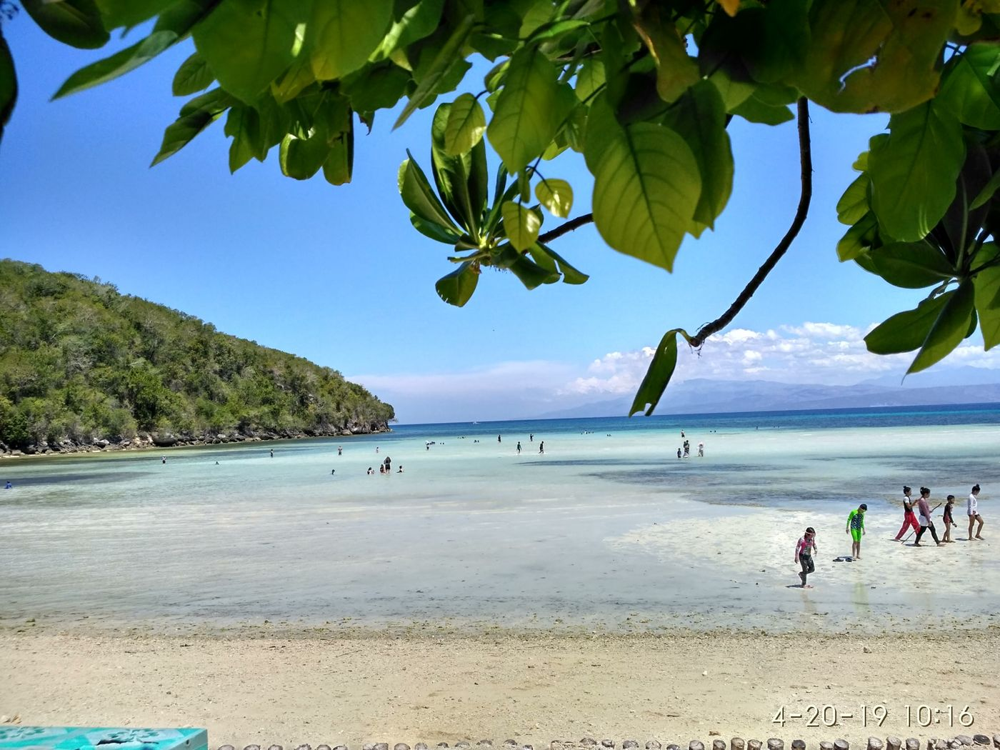
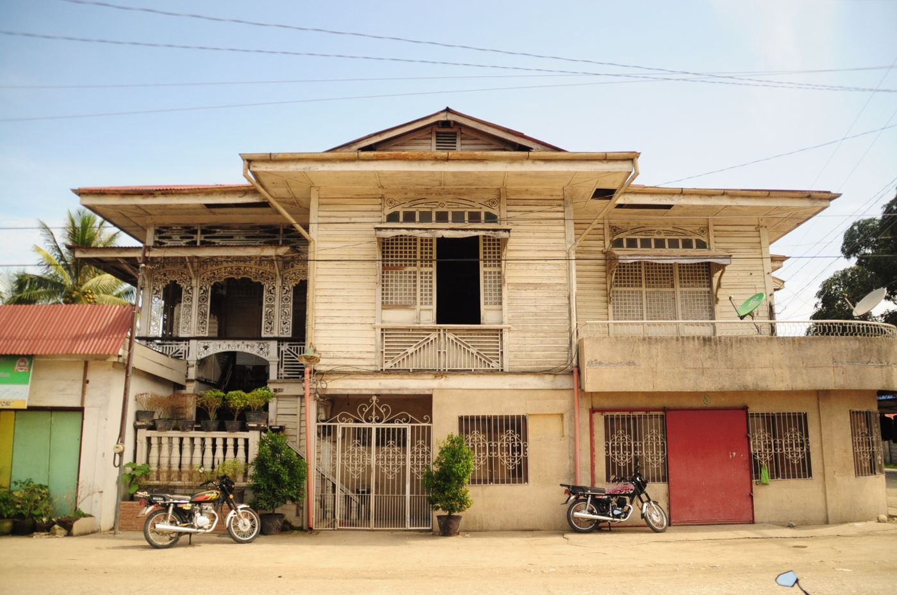
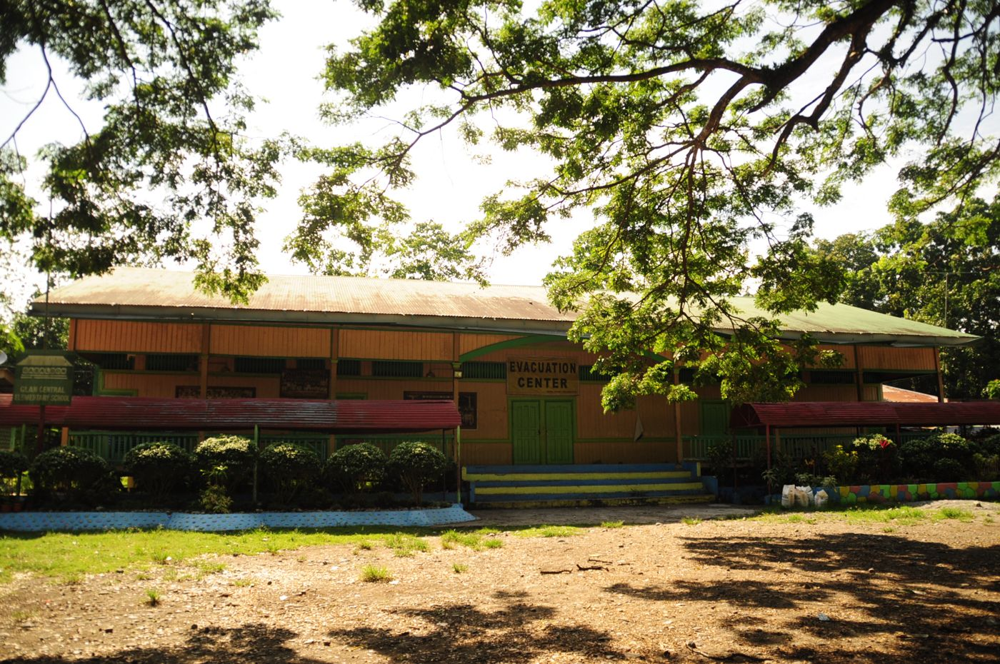
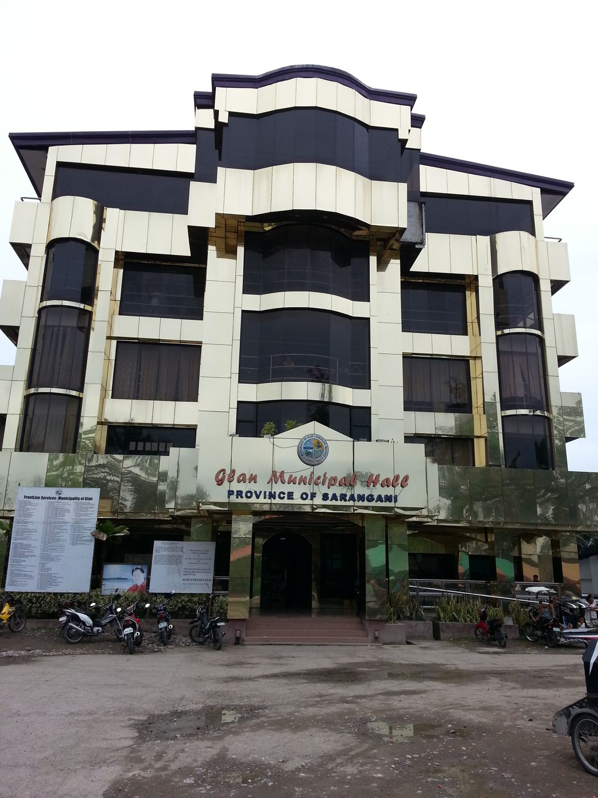

Glan began as Agricultural Colony No. 9, a government farm settlement on the southern tip of Sarangani Bay. Today it is a first-class town of 117,017 people (2024 census) in 31 barangays, covering about 610 km².
Local tradition says a surveyor once asked a Maguindanaon man the name of the place. He was sharpening a blade and answered galang, "sharpening." The surveyors wrote down "Galang," which became "Glan" on the colony plan.
1914On October 8, the first settlers arrive by ship from Cebu to open the colony.
1917Tranquilino Ruiz Sr. serves as colony supervisor as farms and the town center take shape.
1949Glan becomes a municipality on July 27 through Executive Order No. 250 of President Elpidio Quirino.
1969Part of Glan's territory becomes the new Municipality of Malapatan.
1992Glan becomes part of the newly created Province of Sarangani.
2026A magnitude 7.8 earthquake on June 8 damages roads and homes. Rebuilding is under way.

The Agricultural Colony No. 9 Monument. Photo: Joelaldor, CC BY-SA 4.0
Neighbors
Malapatan to the north, Davao Occidental to the east, the Celebes Sea to the south and Sarangani Bay to the west
Languages
Cebuano, Tboli, Sangirese, Maguindanao, Tagalog
Livelihood
Copra and coconut, milkfish and shrimp ponds, corn, sugarcane, banana, mango and tourism
ZIP code
9517
Area code
(083)
Utilities
SOCOTECO II, Glan Water District

Glan in Sarangani Province. Map: Mike Gonzalez (TheCoffee), CC BY-SA 3.0
Public services
Most offices are at the Municipal Hall in Poblacion, open Monday to Friday, 8:00 AM to 5:00 PM. Requirements can change, so ask the office before you go.
Civil registry
Register a birth, marriage or death, and request certified copies.
Municipal Civil Registrar
Business permits
Apply for a new Mayor's permit or renew your business permit each January.
Business Permits and Licensing Office
Building permits
Building, fencing, electrical and occupancy permits, including repairs after the earthquake.
Municipal Engineering Office
Real property tax
Tax declarations, assessments and payment of real property tax.
Assessor and Treasurer
Health services
Consultations, immunization, maternal care and medical certificates.
Rural Health Unit
Social welfare
Help for families, senior citizens, PWDs, solo parents and children.
MSWDO
Agriculture and fisheries
Seeds, livestock and technical help for coconut farmers, fishpond operators and fisherfolk.
Municipal Agriculture Office
Disaster response
Early warnings, evacuation and emergency response during earthquakes, floods and storms.
MDRRMO
Tourism
Resort accreditation, tour guides, events and visitor information.
Municipal Tourism Office

After the June 8, 2026 earthquake
The magnitude 7.8 quake struck offshore Sarangani at 7:37 in the morning. In Glan it cracked roads, damaged homes and briefly cut the town off from General Santos City. Sarangani was placed under a state of calamity, and repair work continues.
If your home was damaged, register with your barangay and the MSWDO so your household is included in assistance lists. For building repairs, ask the Municipal Engineering Office about permits first.
Photo: Office of the Vice Mayor, Municipal Government of Glan (public domain), via Wikimedia Commons
Dates to remember
January 1–20
Renew business permits to avoid penalties.
By March 31
Pay the first quarter of real property tax, or the full year for an advance-payment discount.
May
Sarangani Bay Festival at Gumasa. Resorts fill up early.
The 31 barangays
Population from the 2020 Census of Population and Housing (PSA), when Glan counted 109,547 residents.
No barangay matches your search. Check the spelling, or clear the box to see all 31.
Municipal officials
2025–2028 term, from public sources. Please confirm names with the Office of the Mayor before relying on them.
Municipal MayorHon. Victor James B. Yap Sr.
Municipal Vice MayorHon. Victor James P. Yap Jr.
Sangguniang Bayan members
Hon. Elsan Faith R. Engkong
Hon. Ricardo Q. Roque Jr.
Hon. Nazarius D. Wata
Hon. Lydia B. Hizoler
Hon. Edwin D. Pacaldo
Hon. Joselito A. Escobar
Hon. Carlos A. Homo
Hon. Florencia L. Senttilas
Visit Glan
Beaches on one side of the highway, a heritage town center on the other, a scenic drive along the bay from General Santos City.

Gumasa Beach
A long stretch of fine white sand and clear, shallow water, often called the "Boracay of Mindanao." Resorts line the shore, and quieter swimming spots lie farther along the coast in barangays such as Burias. Local resorts also run snorkeling and scuba diving trips.
Photo: Bailabiaquia, CC BY-SA 4.0

Heritage houses
Known as Sarangani's heritage town, Glan keeps scores of prewar wooden houses in Poblacion, such as the Alegado Ancestral House. Look up for the carved panels above the windows.
Photo: Joelaldor, CC BY-SA 4.0

Gabaldon school building
The American-era Gabaldon building of Glan Central Elementary School is still in use, and also serves as an evacuation center.
Photo: Joelaldor, CC BY-SA 4.0
Every May
Sarangani Bay Festival
SarBay Fest turns Gumasa into a summer beach party with music and beach volleyball. It is promoted as the biggest beach festival in Mindanao. Book your room early.
Visit the Municipal Hall

The "Golden" Municipal Hall in 2013. Photo: Mata Dil, CC BY 3.0
Address
Municipal Hall, Poblacion, Glan, Sarangani 9517
Office hours
Monday to Friday, 8:00 AM – 5:00 PM, except holidays